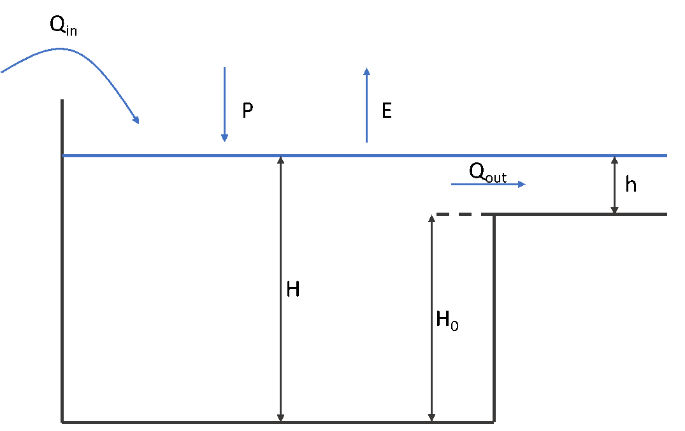

Kinematic wave
Surface routing
The main flow routing scheme available in Wflow.jl is the kinematic wave approach for channel and overland flow, assuming that the topography controls water flow mostly. The kinematic wave equations are (Chow, 1988):
\[ \dfrac{dQ}{dx} + \dfrac{dA}{dt} = q \\~\\ A = \alpha Q^{\beta}\]
These equations can then be combined as a function of streamflow only:
\[ \dfrac{dQ}{dx} + \alpha \beta Q^{\beta - 1} \dfrac{dQ}{dt} = q\]
where $Q$ is the surface runoff in the kinematic wave [m$^3$/s], $x$ is the length of the runoff pathway [m], $A$ is the cross-section area of the runoff pathway [m$^{2}$], $t$ is the integration timestep [s] and $\alpha$ and $\beta$ are coefficients.
These equations are solved with a nonlinear scheme using Newton’s method and can also be iterated depending on the model space and time resolution. By default, the iterations are performed until a stable solution is reached ($\epsilon < 10^{-12}$). For larger models, the number of iterations can also be fixed for to a specific sub-timestep (in seconds) for both overland and channel flows to improve simulation time. To enable (fixed or not) iterations of the kinematic wave the following lines can be inserted in the TOML file of the model:
[model]
# Enable iterations of the kinematic wave
kin_wave_iteration = true
# Fixed sub-timestep for iterations of channel flow (river cells)
kw_river_tstep = 900
# Fixed sub-timestep for iterations of overland flow (land cells)
kw_land_tstep = 3600Subsurface flow routing
In the SBM model the kinematic wave approach is used to route subsurface flow laterally. The saturated store $S$ can be drained laterally by saturated downslope subsurface flow per unit width of slope $w$ [mm] according to:
\[ q=\frac{K_{0}\mathit{tan(\beta)}}{f}(e^{(-fz_{i})}-e^{(-fz_{t})})\]
where $\beta$ is element slope angle [deg.], $q$ is subsurface flow [mm$^{2}$/t], $K_{0}$ is the saturated hydraulic conductivity at the soil surface [mm/t], $z_{i}$ is the water table depth [mm],$z_{t}$ is total soil depth [mm], and $f$ is a scaling parameter [mm$^{-1}$]:
\[ f=\frac{\theta_{s}-\theta_{r}}{M},\,\]
where $\theta_{s}$ is saturated water content [mm/mm] and $\theta_{r}$ is residual water content [mm/mm] and $M$ represents a model parameter [mm], that determines the decrease of vertical saturated conductivity with depth.
Combining with the following continuity equation:
\[ (\theta_s-\theta_r)\frac{\partial h}{\partial t} = -w\frac{\partial q}{\partial x} + wr\]
where $h$ is the water table height [mm], $x$ is the distance downslope [mm], and $r$ is the netto input rate [mm/t] to the saturated store. Substituting for $h (\frac{\partial q}{\partial h})$, gives:
\[ w \frac{\partial q}{\partial t} = -cw\frac{\partial q}{\partial x} + cwr\]
where celerity $c = \frac{K_{0}\mathit{tan(\beta)}}{(\theta_s-\theta_r)} e^{(-fz_{i})}$
The kinematic wave equation for lateral subsurface flow is solved iteratively using Newton's method.
For the lateral subsurface flow kinematic wave the model timestep is not adjusted. For certain model timestep and model grid size combinations this may result in loss of accuracy.
Subcatchment flow
Normally the the kinematic wave is continuous throughout the model. By using the the pits entry in the model and input sections of the TOML file all flow is at the subcatchment only (upstream of the pit locations, defined by the netCDF variable wflow_pits in the example below) and no flow is transferred from one subcatchment to another. This can be convenient when connecting the result of the model to a water allocation model such as Ribasim.
[input]
# these are not directly part of the model
pits = "wflow_pits"
[model]
pits = trueLimitations
The kinematic wave approach for channel, overland and lateral subsurface flow, assumes that the topography controls water flow mostly. This assumption holds for steep terrain, but in less steep terrain the hydraulic gradient is likely not equal to the surface slope (subsurface flow), or pressure differences and inertial momentum cannot be neglected (channel and overland flow). In addition, while the kinemative wave equations are solved with a nonlinear scheme using Newton's method (Chow, 1988), other model equations are solved through a simple explicit scheme. In summary the following limitations apply:
Channel flow, and to a lesser degree overland flow, may be unrealistic in terrain that is not steep, and where pressure forces and inertial momentum are important.
The lateral movement of subsurface flow may be very wrong in terrain that is not steep.
Reservoirs and Lakes
Simplified reservoirs and lakes models can be included as part of the river kinematic wave network.
Reservoirs
Simple reservoirs can be included within the kinematic wave river routing by supplying the following reservoir parameters:
locs- Outlet of the reservoirs in which each reservoir has a unique idarea- Surface area of the reservoirs [m$^2$]areas- Reservoir coveragetargetfullfrac- Target fraction full (of max storage) for the reservoir: number between 0 and 1targetminfrac- Target minimum full fraction (of max storage). Number between 0 and 1maxvolume- Maximum reservoir storage (above which water is spilled) [m$^3$]demand- Minimum (environmental) flow requirement downstream of the reservoir [m$^3$ s$^{-1}$]maxrelease- Maximum Q that can be released if below spillway [m$^3$ s$^{-1}$]
By default the reservoirs are not included in the model. To include them put the following lines in the TOML file of the model:
[model]
reservoirs = trueFinally there is a mapping required between external and internal parameter names in the TOML file, with below an example:
[input]
[input.lateral.river.reservoir]
area = "ResSimpleArea"
areas = "wflow_reservoirareas"
demand = "ResDemand"
locs = "wflow_reservoirlocs"
maxrelease = "ResMaxRelease"
maxvolume = "ResMaxVolume"
targetfullfrac = "ResTargetFullFrac"
targetminfrac = "ResTargetMinFrac"Lakes
Natural (uncontrolled) lakes are modelled using a mass balance approach:
\[ \dfrac{S(t + \Delta t)}{\Delta t} = \dfrac{S(t)}{\Delta t} + Q_{in} + \dfrac{(P-E) A}{\Delta t} - Q_{out}\]
where $S$ is lake storage [m$^3$], $\Delta t$ is the model timestep [s], $Q_{in}$ is the sum of inflows (river, overland and lateral subsurface flow) [m$^3$ s$^{-1}$], $Q_{out}$ is the lake outflow at the outlet [m$^3$ s$^{-1}$], $P$ is precipitation [m], $E$ is lake evaporation [m] and $A$ is the lake surface area [m$^2$].

Lake schematisation.
Most of the variables in this equation are already known or coming from previous timestep, apart from $S(t+ \Delta t)$ and $Q_{out}$ which can both be linked to the water level $H$ in the lake using a storage curve $S = f(H)$ and a rating curve $Q = f(H)$. In wflow, several options are available to select storage and rating curves, and in most cases, the mass balance is then solved by linearization and iteration or using the Modified Puls Approach from Maniak (Burek et al., 2013). Storage curves in wflow can either:
- Come from the interpolation of field data linking volume and lake height,
- Be computed from the simple relationship $S = A H$.
Rating curves in wlow can either:
- Come from the interpolation of field data linking lake outflow and water height,
- Be computed from a rating curve of the form $Q_{out} = \alpha {(H-H_{0})}^{\beta}$, where $H_{0}$ is the minimum water level under which the outflow is zero. Usual values for $\beta$ are 3/2 for a rectangular weir or 2 for a parabolic weir (Bos, 1989).
Modified Puls Approach
The Modified Puls Approach is a resolution method of the lake balance that uses an explicit relationship between storage and outflow. Storage is assumed to be equal to $A H$ and the rating curve for a parabolic weir ($\beta = 2$):
\[ S = A H = A (h + H_{0}) = \dfrac{A}{\sqrt{\alpha}} \sqrt{Q} + A H_{0}\]
Inserting this equation in the mass balance gives:
\[ \dfrac{A}{\Delta t \sqrt{\alpha}} \sqrt{Q} + Q = \dfrac{S(t)}{\Delta t} + Q_{in} + \dfrac{(P-E) A}{\Delta t} - \dfrac{A H_{0}}{\Delta t} = SI - \dfrac{A H_{0}}{\Delta t}\]
The solution for Q is then:
\[ Q = { \left( -LF + \sqrt{LF^{2} + 2 \left( SI - \dfrac{A*H_{0}}{\Delta t} \right) } \right) }^{2} \text{for } SI > \dfrac{A H_{0}}{\Delta t} \text{ and where}\\ LF = \dfrac{A}{\Delta t \sqrt{\alpha}} \\~\\ Q = 0 \text{ for } SI \leq \dfrac{A*H_{0}}{\Delta t}\]
Lake parameters
Natural lakes can be included within the kinematic wave river routing in wflow, by supplying the following parameters:
area- Surface area of the lakes [m$^2$]areas- Coverage of the lakeslocs- Outlet of the lakes in which each lake has a unique idlinkedlakelocs- Outlet of linked (downstream) lakes (unique id)waterlevel- Lake water level [m], used to reinitiate lake modelthreshold- Water level threshold $H_{0}$ under which outflow is zero [m]storfunc- Type of lake storage curve ; 1 for $S = AH$ (default) and 2 for $S = f(H)$ from lake data and interpolationoutflowfunc- Type of lake rating curve ; 1 for $Q = f(H)$ from lake data and interpolation, 2 for general $Q = b(H - H_{0})^{e}$ and 3 in the case of Puls Approach $Q = b(H - H_{0})^{2}$ (default)b- Rating curve coefficiente- Rating curve exponent
By default, the lakes are not included in the model. To include them, put the following line in the TOML file of the model:
[model]
lakes = trueThere is also a mapping required between external and internal parameter names in the TOML file, with below an example:
[input]
[input.lateral.river.lake]
area = "lake_area"
areas = "wflow_lakeareas"
b = "lake_b"
e = "lake_e"
locs = "wflow_lakelocs"
outflowfunc = "lake_outflowfunc"
storfunc = "lake_storfunc"
threshold = "lake_threshold"
waterlevel = "lake_waterlevel"Additional settings
Storage and rating curves from field measurement can be supplied to wflow via CSV files supplied in the same folder of the TOML file. Naming of the files uses the ID of the lakes where data are available and is of the form lake_sh_1.csv and lake_hq_1.csv for respectively the storage and rating curves of lake with ID 1.
The storage curve is stored in a CSV file with lake level [m] in the first column H and corresponding lake storage [m $^{3}$] in the second column S:
H, S
392.21, 0
393.21, 430202000
393.71, 649959000
394.21, 869719000The rating curve uses level and discharge data depending on the Julian day of the year (JDOY). The first line contains H for the first column. The other lines contain the water level and the corresponding discharges for the different JDOY (1-365), see also the example below, that shows part of a CSV file (first 4 Julian days).
H
394, 43, 43, 43, 43
394.01, 44.838, 44.838, 44.838, 44.838
394.02, 46.671, 46.671, 46.671, 46.671
394.03, 48.509, 48.509, 48.509, 48.509
394.04, 50.347, 50.347, 50.347, 50.347
394.05, 52.179, 52.179, 52.179, 52.179Linked lakes: In some cases, lakes can be linked and return flow can be allowed from the downstream to the upstream lake. The linked lakes are defined in the linkedlakelocs parameter that represent the downstream lake location ID, at the grid cell of the upstream lake location.
In every file, level units are meters [m] above lake bottom and not meters above sea level [m asl]. Especially with storage/rating curves coming from data, please be careful and convert units if needed.
References
- Bos M.G., 1989. Discharge measurement structures. Third revised edition, International Institute for Land Reclamation and Improvement ILRI, Wageningen, The Netherlands.
- Burek P., Van der Knijf J.M., Ad de Roo, 2013. LISFLOOD – Distributed Water Balance and flood Simulation Model – Revised User Manual. DOI: http://dx.doi.org/10.2788/24719.
- Chow, V., Maidment, D. and Mays, L., 1988, Applied Hydrology. McGraw-Hill Book Company, New York.